Calm money
for your household.
Your banks, your budget and your future in one place. A budget for every week, tools for every big decision, and your data never leaves home.
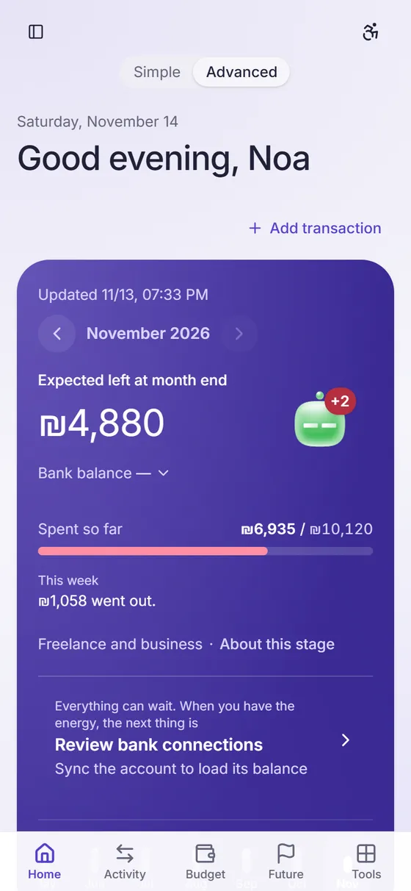
Meet Pip
Try it: drag, press, or pick a mood.
In the app, Pip's mood follows your household's money, not buttons.Everything in Penny, screen by screen.
These are real screenshots of the app with sample data. Select a screenshot to open it full size.
One clear number: what you'll have left
Home answers the question that matters first: how much money will be left at month end. Simple mode shows just that, and Advanced mode opens the full picture.
- What you'll have left, and spending so far against the budget
- Move between the months of the year in one click
- Add a cash transaction in a second
- Pip shows when something needs care, with the next step underneath

Every transaction, from every bank and card
Automatic sync from 18 banks and card companies, or import from a file. Everything in one list, grouped by week, in category colours.
- Search, filter by category, splits and tags
- A "To review" queue for new transactions, with settle-ups kept apart
- An AI of your choice sorts transactions, or no AI at all
- Automatic rules for merchants that keep coming back

A budget that shows the pace, not just the total
Every category has a budget, what's gone and what's left. You can build a budget from your own average in one click.
- Where the money goes, by category
- 50/30/20 view
- Summary by month, quarter, half-year and year, with savings rate
- A calendar of expected and recurring charges

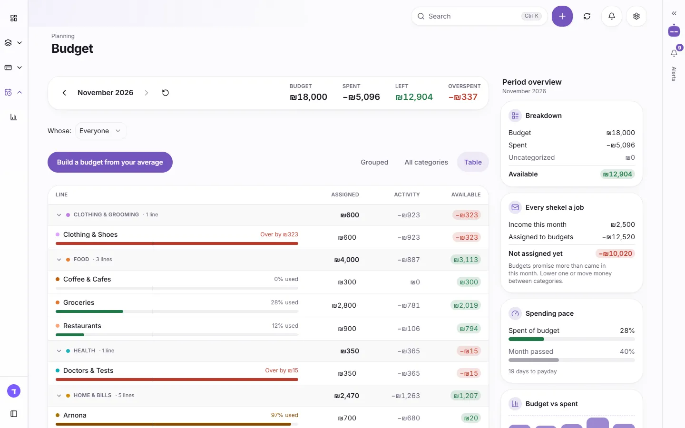

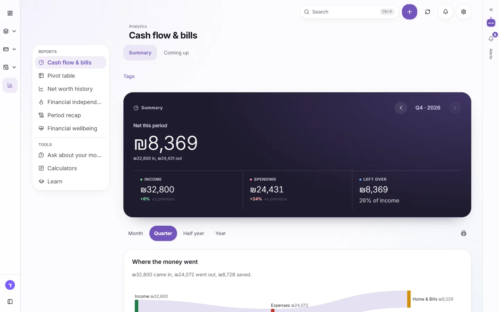

Investments, financial independence and life stages
Your household's net worth in one place, next to planning ahead: when your money could support you, and what's worth sorting at the stage you're in.
- Assets, liabilities and net worth
- Allocation by type and currency, compared with the S&P 500 and TA-125
- Financial-independence calculator with life events and goals
- Checklists by life stage, linking to official sources

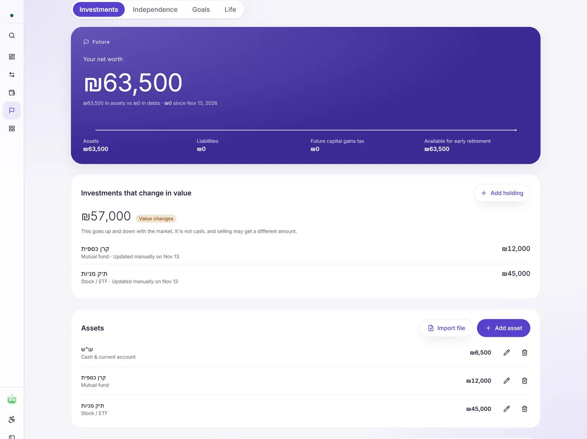

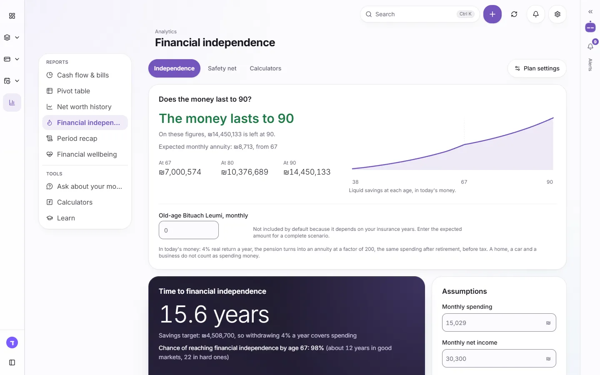

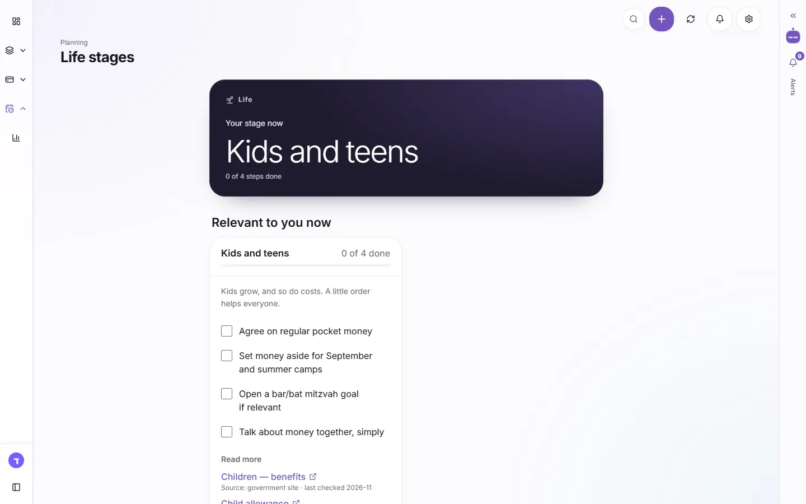
Comfortable in one hand, like an app.
Penny adapts to phone, tablet and desktop. On a phone you get a bottom bar, a floating add button and screens that scroll under your thumb. Phone access goes over your home network, only after you turn it on, with a code.
- Five tabs at the bottom: Home, Transactions, Budget, Future, Tools
- Dark and light themes
- Installs as an app on your phone's home screen

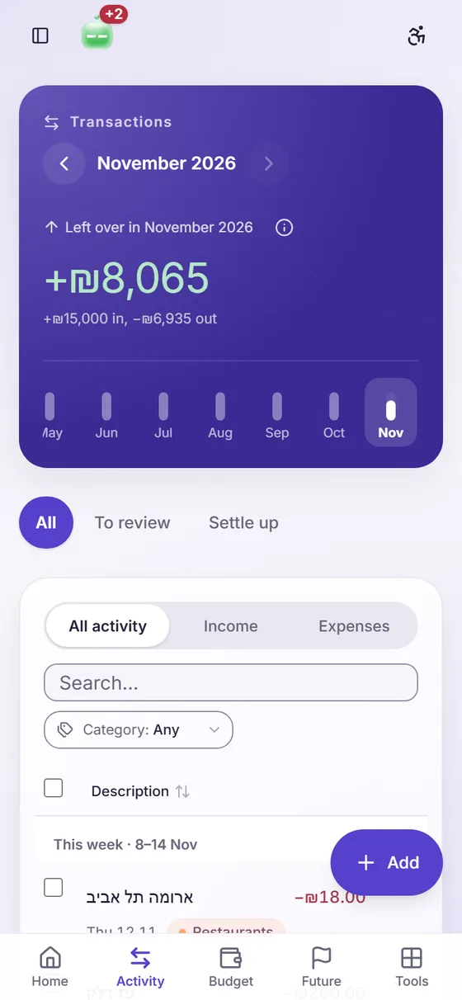
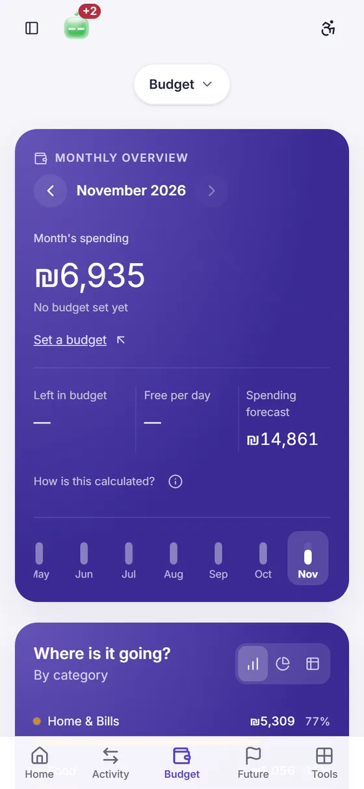
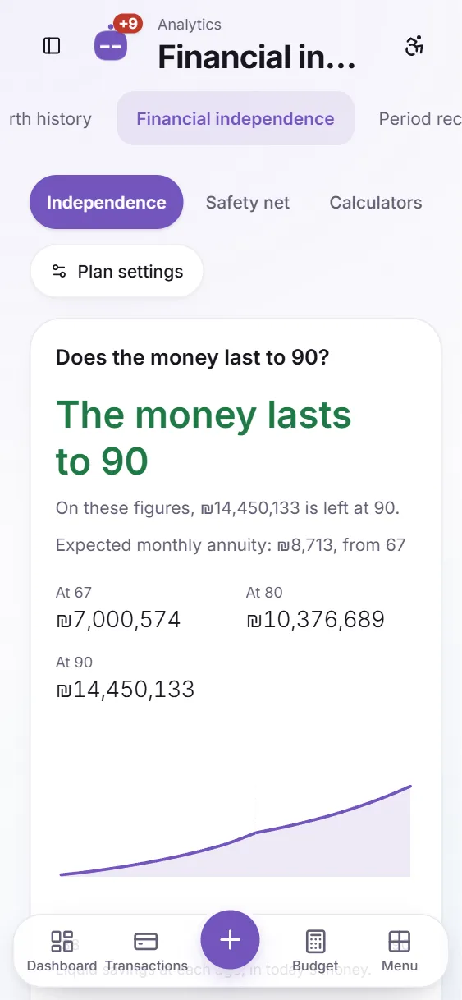
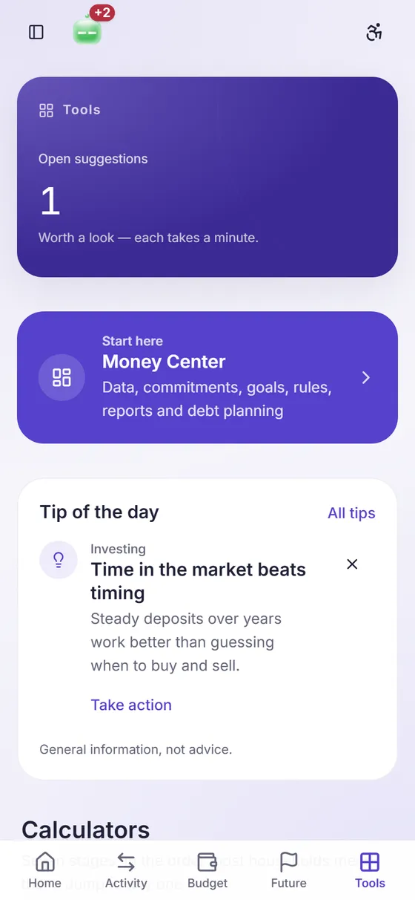

One household, and everyone gets their own screen
Penny is built for a whole home, not a single user. The data is shared, and the preferences are personal.

Family profiles
A "who's using?" screen, one shared household, and everyone keeps their own layout and accessibility choices.
Ask your money
"How much did I spend on food last month?" in plain words, plus a Telegram bot with instant feedback.
Accessible by design
An accessibility menu (Alt+A) and a statement aligned with IS 5568 and WCAG 2.2 AA.
Privacy mode
One click hides every amount, for when someone glances at your screen.
The answers that actually matter here.
More than 25 calculators and guided tools, a knowledge centre and periodic check-ins. Each tool shows which year its figures are valid for, and the code cites the source.

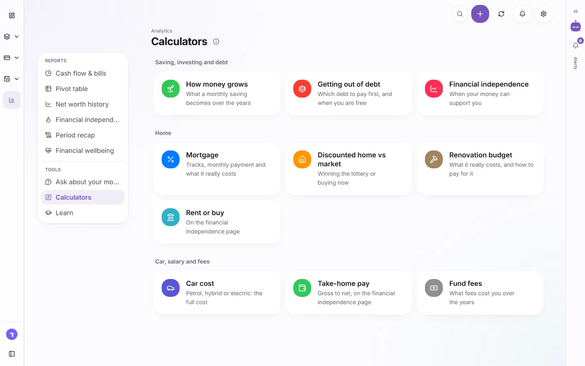
Calculators

Mortgage

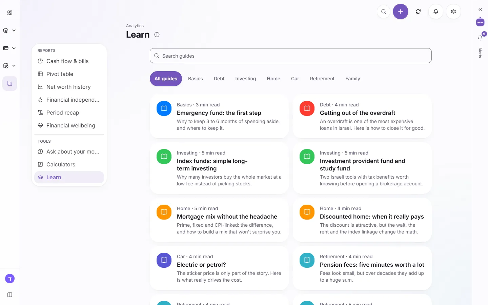
Knowledge centre

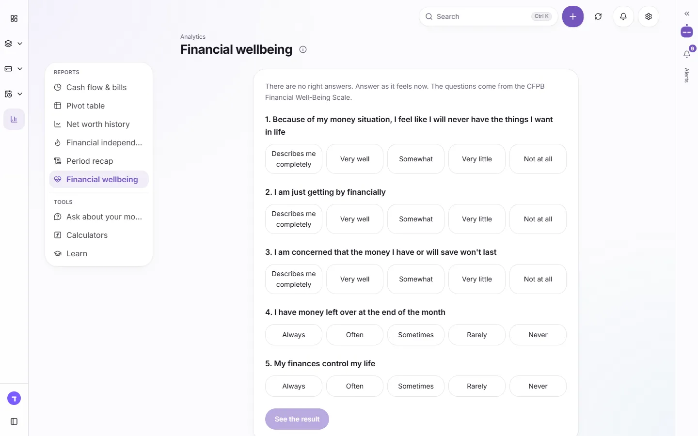
Well-being check

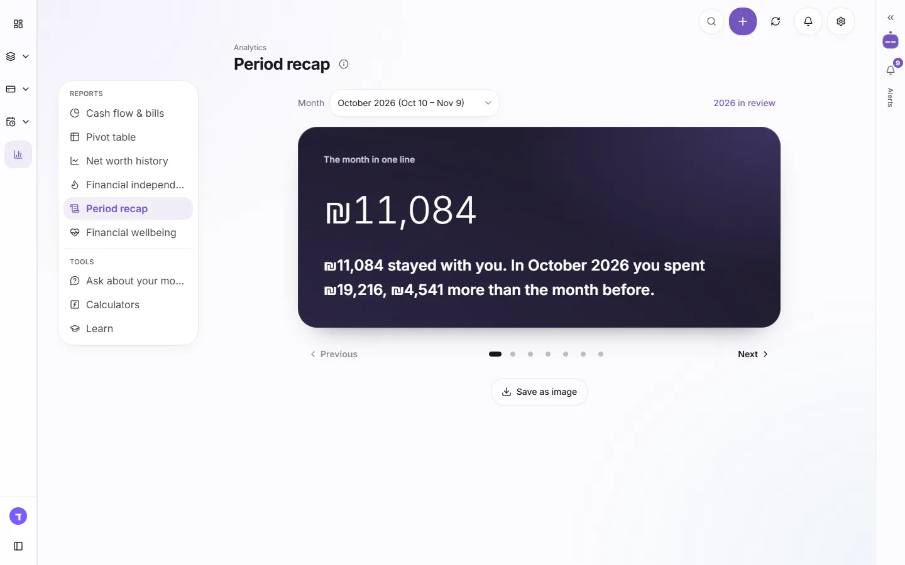
Monthly recap

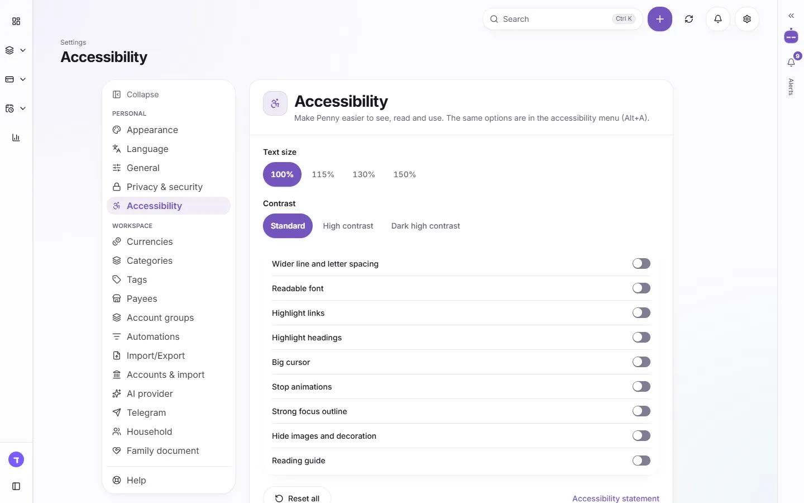
Accessibility
Your data doesn't leave home.
Penny runs on your computer and listens only on the local address. Your data sits in one file you can back up, with an automatic backup before any change to its structure. Nothing goes out except to your bank, and to an AI provider if you chose one.

Lives on your computer
A small background service. Phone access only when you turn it on, with a code.
LOCALHOST ONLYPasswords stay put
Bank credentials are encrypted in a local file, and the app locks.
AES-256-GCMYou choose the AI
Claude, local Ollama, or no AI at all.
CLAUDE · OLLAMA · OFFFour ways to start.
The first time, a short onboarding walks you through it: profile and Pip, connect a bank or import a file, a monthly target and budgets.
Windows
Download Penny Setup.exe and run it. No terminal, no Node.js. To update, run the new installer.
DownloadmacOS
Download the .dmg (Apple silicon or Intel) and drag Penny to Applications. First open: System Settings → Privacy & Security → Open Anyway.
DownloadDocker
Everything in an isolated container, with updates that roll back automatically if something's wrong.
docker compose up -d --build
From source
Installs an always-on service and a menu bar app on macOS and Windows.
git clone https://github.com/Sergey-Bar/Penny.git cd Penny && npm install npm run setup
A personal tool for your own accounts only. Automated access to banks may violate their terms of service. Calculators give estimates, not advice.